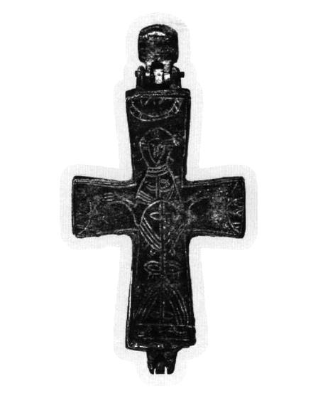
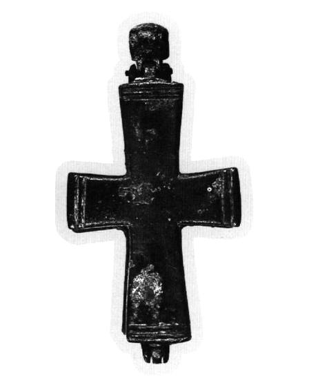

Catalog › CE-0376 · EVA2006-8
Encolpion bivalv de aliaj de cupru, cat. 8, colecție privată
nedatat · loc necunoscut · Colecție privată (Οικογένεια Γ. και Φ. Νοταρά)
double-sided reliquary cross (enkolpion), altul; nedatat; find spot unknown; kept at Colecție privată (Οικογένεια Γ. και Φ. Νοταρά).




Identificare
- Categorie
- Encolpion bivalv (relicvar)
- Material
- Altul
- Tehnică
- Gravare (incizie)
- Dimensiuni
- Î 65 × L 43 mm
Iconografie
- Avers
- Maica Domnului Orantă
- Descriere avers
- Maica Domnului în rugăciune, cu nimb; sub veșmânt se văd picioarele; la nivelul taliei o cruce sub un semicerc, iar restul veșmântului este ornamentat cu motive în formă de frunză și linii ușor curbe; deasupra capului un nor din care se arată mâna (?) lui Dumnezeu; pe brațele orizontale câte un semicerc decorativ care acoperă o parte din golul dintre capetele mâinilor și marginile brațelor.
- Revers
- Ornament geometric
- Descriere revers
- Câte două caneluri paralele adânci pe marginile fiecărui braț.
Datare și atribuire
- Datare
- nedatat
- Tipologie
- Evangelatou-Notara 2006, ενότητα 2 (cat. 8)
Descoperire
- Context
- Colecție (fără context)
Păstrare și referințe
- Colecție
- Colecție privată (Οικογένεια Γ. και Φ. Νοταρά)
- Bibliografie
- Φ. Ευαγγελάτου-Νοταρά (F. Evangelatou-Notara), Βυζαντινοί χάλκινοι σταυροί σε ιδιωτική συλλογή, în „Δελτίον της Χριστιανικής Αρχαιολογικής Εταιρείας”, 27 (2006), p. 371–380 [Evangelatou-Notara 2006], p. 374–375, cat. nr. 8, reprodusă la Εικ. 8 (p. 375). doi: 10.12681/dchae.496; https://doi.org/10.12681/dchae.496
- Figura
- Εικ. 8
- Planșe
- Evangelatou-Notara 2006, p. 375
- Observații
- Dimensiuni: 6,5 × 4,3 cm; inel de suspendare 1,6 cm. Material: aliaj de cupru; patină verde-castanie; inelul de suspendare este cilindric; brațele sunt ușor lățite. Piesa a fost cumpărată de la anticari din Atena și din Londra (indicație dată pentru întreaga colecție); locul și condițiile descoperirii nu sunt cunoscute. Material: „aliaj de cupru” (κράμα χαλκού), după sursă. Coordonate: nu sunt date în sursă.
Citare: Corpus Encolpiorum, CE-0376, Encolpion bivalv de aliaj de cupru, cat. 8, colecție privată, --root/piese/EVA2006-8/ (accesat 2026-10-20).